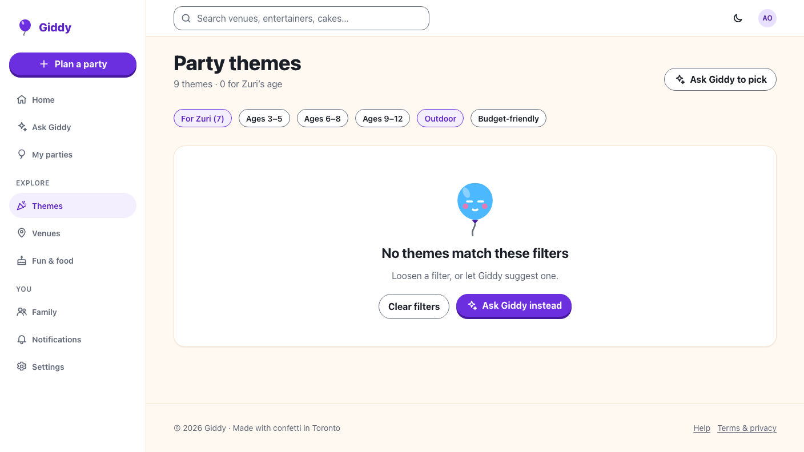

Giddy · Video 09
Choose a theme
Themes that suit the child, chosen in a tap
Themes that suit the child, chosen in a tap
For Zuri (7) on by default; Zuri might love from Giddy's memories; chips with aria-pressed.

Chosen for Zuri; the list keeps its place; Undo for 8 s restores Dino Dig.
Age, band, outdoor and budget filters, interest tags, choose and undo, clearing, the theme driving invites and Fun & food, viewers.
Filters, empty state, choosing, Undo and keeping your place, with axe at 360 and 1280 px.
Next: manage the budget